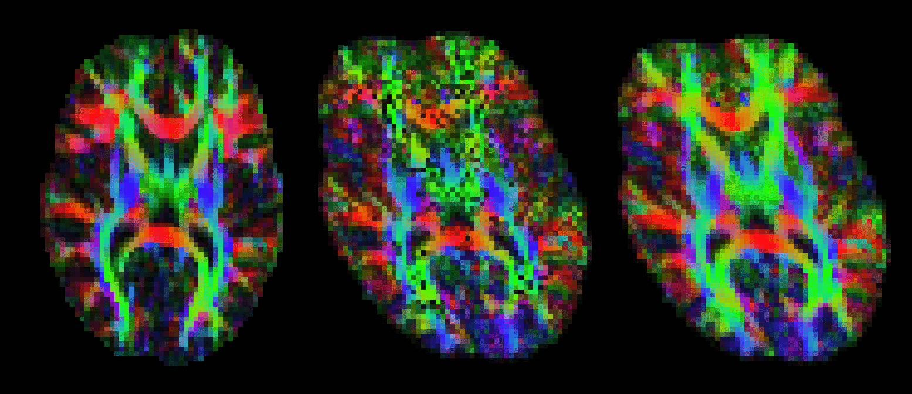

The output of Connectivity-based seed classification is a single volume for
each target mask, named seeds_to_{target} where {target} is replaced
by the file name of the relevant target mask. In these output images, the
value of each voxel within the seed mask is the number of samples seeded
from that voxel reaching the target mask.
proj_thresh is run as follows:
proj_thresh list_of_volumes threshold
Where the list of volumes is the outputs of Connectivity-based seed classification (i.e., files named seeds_to_target1 etc etc) and threshold is expressed as a number of samplesThe output of Connectivity-based seed classification is a single volume for each target mask, named seeds_to_{target} where {target} is replaced by the file name of the relevant target mask. In these output images, the value of each voxel within the seed mask is the number of samples seeded from that voxel reaching the target mask. find_the_biggest classifies seed voxels according to the target mask with which they show the highest probability of connection. It is run as follows:
find_the_biggest list_of_volumes outputname Where the list of volumes is the outputs of Connectivity-based seed classification (i.e., files named seeds_to_target1 etc etc).
The example below uses probtrackx and find_the_biggest to perform hard segmentation of the thalamus on the basis of its connections to cortex.

After running dtifit or bedpostx, it is often useful to register vector data to another space. For example, one might want to represent V1 for different subjects in standard space. vecreg is a command line tool that allows to perform such registration.
Vector images cannot be registered by simply applying a transformation (as calculated by, say, FLIRT) to every voxel's coordinates. The corresponding vectors have to be reoriented accordingly (see D. Alexander 2001, IEEE-TMI 20:1131-39). vecreg performs this operation for you.
The image on the right shows the effect of applying vecreg (right) to the V1 image on the left, compared to simply applying voxelwise transformation (e.g. using applyxfm4D) to the vectors (centre).
Important: vecreg does not calculate a transformation, but simply applies a given transformation to the input vector field. vecreg can apply a linear transformation calculated with FLIRT, or a non-linear transformation calculated by FNIRT.
types of input that may be used for vecreg
from dtifit: V1,V2,V3,tensor
from bedpostx: dyads1, dyads2, etc.
vecreg -i <input4D> -o <output4D> -r <refvol> [-t <transform>] Compulsory arguments (You MUST set one or more of): -i,--input filename for input vector or tensor field -o,--output filename for output registered vector or tensor field -r,--ref filename for reference (target) volume Optional arguments (You may optionally specify one or more of): -v,--verbose switch on diagnostic messages -h,--help display this message -t,--affine filename for affine transformation matrix -w,--warpfield filename for 4D warp field for nonlinear registration --rotmat filename for secondary affine matrix if set, this will be used for the rotation of the vector/tensor field --rotwarp filename for secondary warp field if set, this will be used for the rotation of the vector/tensor field --interp interpolation method : nearestneighbour, trilinear (default), sinc or spline -m,--mask brain mask in input space --refmask brain mask in output space (useful for speed up of nonlinear reg)
qboot is a command line tool that allows estimation of diffusion ODFs and fibre orientations from them. Its output can be used as an input for probtrackX in order to perform probabilistic tractography.
ODF estimation is performed using a real spherical harmonics basis. Fibre orientations are estimated as the local maxima of the ODFs. Both deterministic and probabilistic estimation can be performed. For the latter, residual bootstrap is performed to infer on the ODF shape and obtain a distribution of fibre orientations. For more details on the implementation see (S.N. Sotiropoulos, I. Aganj, S. Jbabdi, G. Sapiro, C. Lenglet and T.E. Behrens, "Inference on Constant Solid Angle Orientation Distribution Functions from Diffusion-Weighted MRI", OHBM, 2011).
qboot allows reconstruction of q-ball ODFs (Tuch, MRM, 2004), CSA ODFs (Aganj et al, MRM, 2010) and variants of them, obtained via Laplacian sharpening and Laplace-Beltrami regularization (Descoteaux et al, MRM, 2007). Both spherical harmonic coefficients of the reconstructed ODFs and fibre orientation estimates may be returned as ouput.
Input files for qboot : Similar to dtifit and bedpostx, qboot needs a 4D data file, a binary mask_file, a bvecs and a bvals file.
Command-line utility
qboot -k data_file -m nodif_brain_mask -r bvecs -b bvals
Compulsory arguments (You MUST set one or more of):
-k,--data Data file
-m,--mask Mask file
-r,--bvecs b vectors file
-b,--bvals b values file
Optional arguments (You may optionally specify one or more of):
--ld,--logdir Output directory (default is logdir)
--forcedir Use the actual directory name given - i.e. don't add + to make a new directory
--q File provided with multi-shell data. Indicates the number of directions for each shell
--model Which model to use. 1=Tuch's ODFs, 2=CSA ODFs (default), 3=multi-shell CSA ODFs
--lmax Maximum spherical harmonic order employed (must be even, default=4)
--npeaks Maximum number of ODF peaks to be detected (default 2)
--thr Minimum threshold for a local maxima to be considered an ODF peak.
Expressed as a fraction of the maximum ODF value (default 0.4)
--pf Which peak finder to use. 1=Discrete, 2=Semi-continuous (can be only used with lmax=4) (default=1)
--ns,--nsamples Number of bootstrap samples (default is 50)
--lambda Laplace-Beltrami regularization parameter (default is 0)
--delta Signal attenuation regularization parameter for model=2 (default is 0.01)
--alpha Laplacian sharpening parameter for model=1 (default is 0, should be smaller than 1)
--seed Seed for pseudo-random number generator
--savecoeff Save the ODF coefficients instead of the peaks.
--savemeancoeff Save the mean ODF coefficients across all samples
-V,--verbose Switch on diagnostic messages
Possible Outputs of qboot
Multi-shell data assumptions
The current implementation of qboot can estimate multi-shell ODFs, assuming the following for the data: